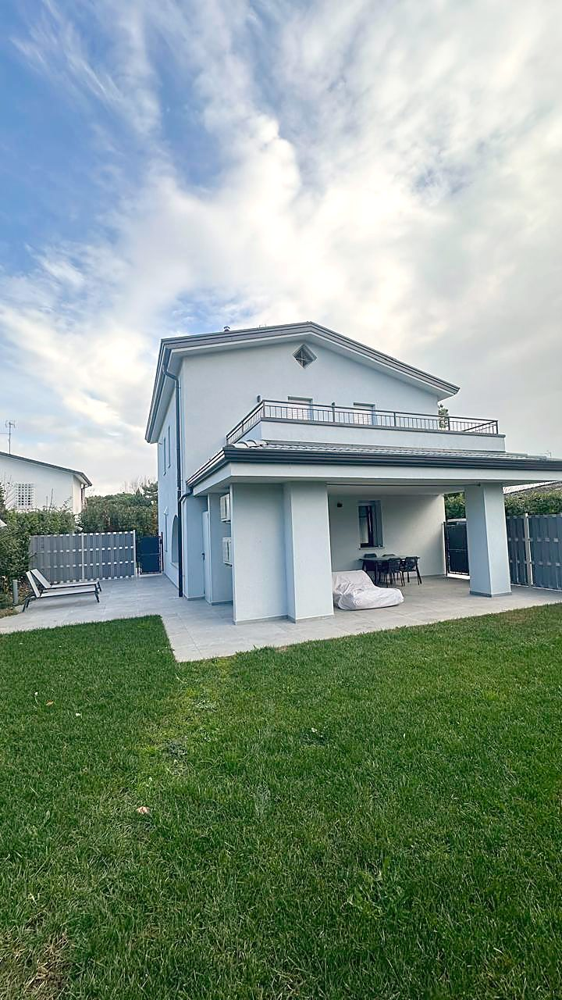
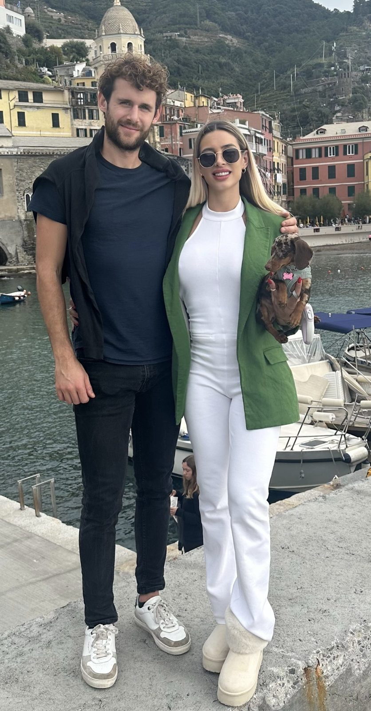

Punta Grò · Sirmione · Gardasee
Villa Puntino
Zwei moderne Ferienwohnungen mit privatem Garten, nur wenige Schritte vom Ufer des Gardasees. Hunde sind herzlich willkommen.
Willkommen
Ruhig wohnen, ein paar Schritte vom See
Die Villa Puntino liegt in Punta Grò, einem ruhigen Ortsteil von Sirmione am Südufer des Gardasees. Zum Ufer sind es nur ein paar Schritte – perfekt für ein Bad im See am Morgen oder einen Spaziergang am Wasser am Abend.
Im Haus gibt es zwei gleich große, modern eingerichtete Wohnungen mit je zwei Schlafzimmern, Bad und offener Wohnküche. Jede Wohnung hat ihren eigenen, abgetrennten Garten mit Gasgrill, Außendusche, Gartentisch und Sonnenliegen.

Die Wohnungen
Zwei Wohnungen, ein Haus am See


In beiden Wohnungen
Alles für entspannte Tage im Freien
Gasgrill
Grillabende im eigenen Garten.
Außendusche
Abduschen nach dem Baden im See.
Sonnenliegen & Tischset
Gartenmöbel für Frühstück und Siesta.
Parkplatz mit E-Ladestation
Großer Parkplatz direkt am Haus.

Umgebung
Rund um die Villa Puntino
Baden, Radfahren, Kultur und Wein – vom Haus aus ist am Südufer des Gardasees vieles ganz nah. Die Entfernungen gelten ab der Villa Puntino.
Park & Strand Punta Grò
Direkt von der Villa zu Fuß an den See: Der Park Punta Grò ist ein Naturgebiet mit viel Grün, großen Liegewiesen und Bäumen, die Schatten spenden – ideal für Spaziergänge am Ufer. Am Strand gibt es eine Strandbar und Liegenverleih.
Mit Hund in den See
Kein Hundestrand nötig: Unten am See bei der Villa kann Ihr Hund einfach direkt ins Wasser. Vom Steg aus genießen Sie dabei den Blick über den Gardasee.
Radweg nach Sirmione
Der Uferweg führt von Punta Grò immer am See entlang bis nach Sirmione – ideal zum Radfahren, Joggen und Spazieren.
Altstadt Sirmione
Die autofreie Altstadt mit der Scaligerburg und den Grotten des Catull, den Resten einer römischen Villa an der Spitze der Halbinsel.
Thermen von Sirmione
Warmes Thermalwasser direkt am See – zum Beispiel im Thermalbad Aquaria in der Altstadt.
Peschiera del Garda
Die Festungsstadt mit ihren Mauern und Kanälen gehört zum UNESCO-Welterbe und ist auch über Radwege erreichbar.
Lugana-Weinberge
Punta Grò liegt mitten im Weinbaugebiet des Lugana. Viele Weingüter in der Umgebung laden zur Verkostung ein.
Gardaland
Italiens bekanntester Freizeitpark – ein Highlight für Familien mit Kindern.
Verona
Die Stadt von Romeo und Julia mit der römischen Arena ist in rund 40 Autominuten erreicht – perfekt für einen Tagesausflug.
Lage
Punta Grò, Sirmione
Ruhige Wohnlage am Südufer des Gardasees. Der See liegt praktisch vor der Haustür.
Via Mozart 17
Punta Grò, 25019 Sirmione (BS)
Italien
Ihre Gastgeber
Daniel, Melina & Kika
Hinter der Villa Puntino stehen wir zwei – und natürlich Kika, unsere Dackeldame. Wir lieben den Gardasee und wünschen uns, dass Sie sich hier genauso wohlfühlen wie wir: mit viel Platz drinnen und draußen, für Zwei- und Vierbeiner. Haben Sie vor oder während Ihres Urlaubs eine Frage, schreiben Sie uns einfach oder rufen Sie an.

Anfrage & Preise
Preise auf Anfrage
Schreiben Sie uns Ihren Wunschzeitraum, die Anzahl der Personen und ob ein Hund mitkommt – wir melden uns schnell mit Verfügbarkeit und Preis.